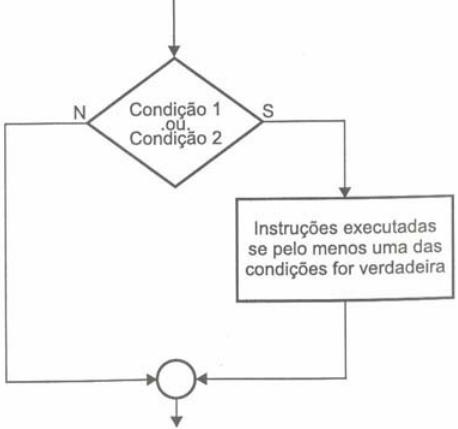
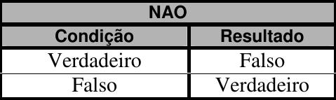

Aula 03 - Estruturas de controle: decisão
Igor Conrado Alves de Lima - prof.igor@microcamp.com.br
Linguagens de programação normalmente oferecem instruções que servem para tratar o fluxo de programas para diferentes condições.
Em Português Estruturado nós temos:
se (<condição>) entao
<instruções para condição verdadeira>
fimse
A mesma instrução em diagrama de blocos fica assim:
Desenvolva o algoritmo, o respectivo diagrama de blocos e sua codificação em Português Estruturado para resolver o problema de ler dois valores numéricos, efetuar a adição e apresentar o seu resultado caso o valor somado seja maior que 10.
Algoritmo:
Diagrama de blocos:
Português Estruturado:
algoritmo "Soma_numeros"
var
X, A, B: inteiro
inicio
leia(A)
leia(B)
X <- A + B
se (X>10) entao
escreva(X)
fimse
fimalgoritmo
| Símbolo | Significado |
|---|---|
| = | igual a |
| <> , != | diferente de |
| > | maior que |
| < | menor que |
| >= | maior ou igual a |
| <= | menor ou igual a |
Esse tipo de instrução nos permite estabelecer um bloco alternativo de intruções caso a condição seja avaliada como falsa.
Em Português Estruturado:
se (<condição>) entao
<instruções para condição verdadeira>
senao
<instruções para condição falsa>
fimse
A mesma instrução em diagrama de blocos:
Desenvolva o algoritmo, o respectivo diagrama de blocos e sua codificação em Português Estruturado para resolver o problema de ler dois valores numéricos e efetuar a adição dos mesmos. Caso o valor somado seja maior ou igual a 10, este deve ser apresentado somando-se a ele mais 5. Caso o valor somado não seja maior ou igual a 10, este deve ser apresentado subtraindo-se 7.
Algoritmo:
Diagrama de blocos:
Português Estruturado:
algoritmo "Soma_Numeros"
var
X, A, B, R: inteiro
inicio
leia(A, B)
X <- A + B
se (X >= 10) entao
R <- X + 5
senao
R <- X - 7
fimse
escreva(R)
fimalgoritmo
Usamos esse tipo de instrução quando queremos estabelecer verificação de condições sucessivas.
Português Estruturado:
se (<condição1>) entao
<instruções para condição1 verdadeira>
senao
se (<condição2>) entao
<instruções para condição2 verdadeira, porém condição1 falsa>
senao
<instruções para condição2 falsa>
fimse
fimse
Diagrama de blocos:
Elaborar um programa que efetue o cálculo do reajuste de salário de um funcionário e o apresente na tela. Considere que o funcionário deverá receber um reajuste de 15% caso seu salário seja menor que 500. Se o salário for maior ou igual a 500, mas menor ou igual a 1000, seu reajuste será de 10%; caso seja inda maior que 1000, o reajuste deverá ser de 5%.
Algoritmo:
Diagrama de blocos:
Português Estruturado:
algoritmo "Reajusta_Salario"
var
novo_salario: real
salario: real
inicio
leia(salario)
se (salario < 500) entao
novo_salario <- salario * 1.15
senao
se (salario <= 1000) entao
novo_salario <- salario * 1.10
senao
novo_salario <- salario * 1.05
fimse
fimse
escreva(novo_salario)
fimalgoritmo
Há ocasiões em que é necessário trabalhar com o relacionamento de duas ou mais condições ao mesmo tempo na mesma instrução se...entao, e efetuar deste modo testes múltiplos.
Para estes casos é preciso empregar os operadores lógicos: E, OU, e NÃO.
Este operador é utilizado quando dois ou mais relacionamentos lógicos de uma determinada condição precisam ser verdadeiros.
Tabela-verdade:
Português Estruturado:
se (<condição1>) e (<condição2>) entao
<instruções executadas se condição1 e condição2 são verdadeiras>
fimse
Diagrama de blocos:
Exemplo:
algoritmo "testa_logica_e"
var
numero: inteiro
inicio
leia(numero)
se (numero >= 20) e (numero <=90) entao
escreva("O numero esta na faixa de 20 a 90")
senao
escreva("O numero esta FORA da faixa de 20 a 90")
fimse
fimalgoritmo
O operador do tipo OU é utilizado quando pelo menos um dos relacionamentos lógicos de uma condição necessita ser verdadeiro.
Tabela-verdade:
Português Estruturado:
se (<condição1>) ou (<condição2>) entao
<instruções executadas se condição1 ou condição2 é verdadeira>
fimse
Diagrama de blocos:

Exemplo:
algoritmo "testa_logica_ou"
var
SEXO: literal
inicio
leia(SEXO)
se (SEXO = "masculino") ou (SEXO = "feminino") entao
escreva("Seu sexo existe.")
senao
escreva("Desconheço seu sexo.")
fimse
fimalgoritmo
O operador do tipo NAO é utilizado quando se necessita estabelecer que uma determinada condição deve não ser verdadeira ou deve não ser falsa.
NAO se caracteriza por inverter o estado lógico de uma condição.
Tabela-verdade:

Português Estruturado:
se nao(<condição1>) entao
<instruções executadas se condição1 não for verdadeira>
fimse
Exemplo:
algoritmo "Testa_Logica_NAO"
var
A, B, C, X: inteiro
inicio
leia(A, B, X)
se nao(X>5) entao
C <- (A + B) * X
senao
C <- (A - B) * X
fimse
escreva(C)
fimalgoritmo